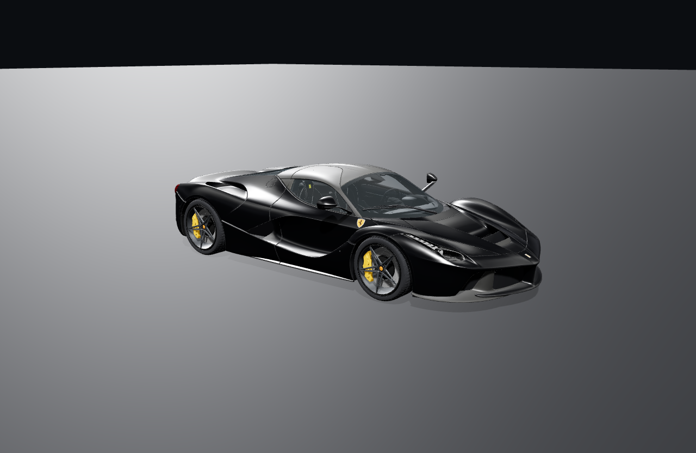

Media · Service · Product
01Media
Submit your car and it runs on the channel. Not a catalogue — a community, built one build at a time, out of Toronto.
Enter Pivarion Media02Service
Ceramic, not cast. We build the media, the site and the follow-up that dealerships actually run on — and then we automate it.
Open services03Product
The handover is the last frame of the sale. We make the objects that carry your name out of the door with the keys.
See the products
Media, service and product for the automotive trade. Toronto, Ontario.
Submit your car, our goal, our social media.
Video for vehicles, websites for dealerships, automated dealership marketing.
3D-printed logos, framed wall art of the car, custom branded accessories.
BUILDING THE SHOT